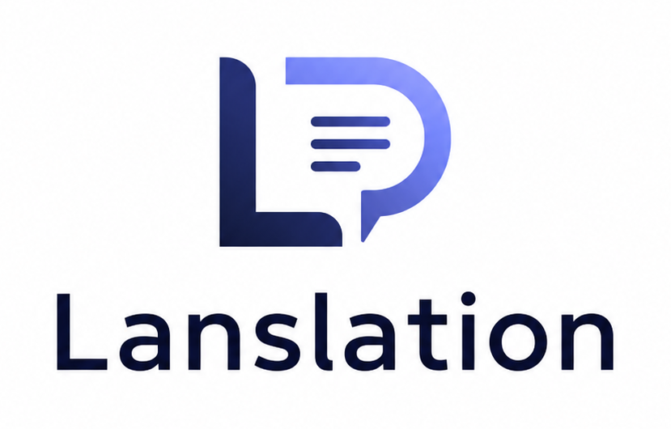

<!doctype html>
<html lang="pt-BR">
<head>
  <meta charset="utf-8" />
  <meta name="google-site-verification" content="mIsYNaph-oH3YO9mjOD_lvuB6akqKCgwDS24JQKVHdg" />
  <title>Lanslation: Translate Words!</title>
  <style>
    :root {
      --ink: #f4efe4;
      --muted: #c9bfae;
      --paper: #15130f;
      --panel: rgba(35, 31, 24, .78);
      --panel-strong: rgba(45, 39, 29, .96);
      --line: rgba(244, 239, 228, .16);
      --gold: #e4b95a;
      --blue: #79b8ff;
      --green: #a7d88c;
      --red: #ef7d62;
      --shadow: 0 28px 90px rgba(0, 0, 0, .48);
      --radius: 28px;
    }

    * { box-sizing: border-box; }

    html {
      scroll-behavior: smooth;
      background: var(--paper);
    }

    body {
      margin: 0;
      min-height: 100vh;
      color: var(--ink);
      font-family: "Avenir Next", "Gill Sans", "Trebuchet MS", sans-serif;
      background:
        radial-gradient(circle at 12% 6%, rgba(228, 185, 90, .22), transparent 30%),
        radial-gradient(circle at 82% 18%, rgba(121, 184, 255, .17), transparent 29%),
        radial-gradient(circle at 70% 92%, rgba(167, 216, 140, .12), transparent 34%),
        linear-gradient(135deg, #0e0d0b 0%, #18140f 44%, #0b1014 100%);
      overflow-x: hidden;
    }

    body::before {
      content: "";
      position: fixed;
      inset: 0;
      pointer-events: none;
      z-index: 0;
      opacity: .28;
      background-image:
        linear-gradient(rgba(244,239,228,.045) 1px, transparent 1px),
        linear-gradient(90deg, rgba(244,239,228,.045) 1px, transparent 1px);
      background-size: 54px 54px;
      mask-image: radial-gradient(circle at 50% 22%, black, transparent 76%);
    }

    button, select, textarea, input {
      font: inherit;
    }

    button {
      color: inherit;
      cursor: pointer;
    }

    .shell {
      position: relative;
      z-index: 1;
      width: min(1180px, calc(100% - 32px));
      margin: 0 auto;
      padding-bottom: 110px;
    }

    .topbar {
      position: sticky;
      top: 16px;
      z-index: 20;
      margin: 16px 0 46px;
      display: grid;
      grid-template-columns: 1fr auto auto;
      gap: 14px;
      align-items: center;
      padding: 12px;
      border: 1px solid var(--line);
      border-radius: 999px;
      background: rgba(16, 14, 11, .72);
      backdrop-filter: blur(22px);
      box-shadow: 0 14px 44px rgba(0,0,0,.28);
    }

    .brand {
      display: flex;
      align-items: center;
      gap: 12px;
      min-width: 0;
      padding-left: 8px;
    }

    .mark {
      width: 42px;
      height: 42px;
      display: grid;
      place-items: center;
      border-radius: 50%;
      color: #241705;
      font-weight: 900;
      font-family: Georgia, serif;
      background:
        conic-gradient(from 140deg, #e4b95a, #fff1a7, #79b8ff, #e4b95a);
      box-shadow: inset 0 0 0 2px rgba(0,0,0,.2), 0 10px 28px rgba(228,185,90,.18);
    }

    .brand strong {
      display: block;
      font-family: Georgia, "Times New Roman", serif;
      font-size: clamp(1rem, 2vw, 1.25rem);
      letter-spacing: -.03em;
      white-space: nowrap;
      overflow: hidden;
      text-overflow: ellipsis;
    }

    .brand small {
      display: block;
      color: var(--muted);
      font-size: .74rem;
      letter-spacing: .12em;
      text-transform: uppercase;
    }

    .nav {
      display: flex;
      gap: 6px;
      padding: 4px;
      border: 1px solid var(--line);
      border-radius: 999px;
      background: rgba(255,255,255,.04);
    }

    .nav button,
    .lang-select {
      border: 0;
      border-radius: 999px;
      background: transparent;
      color: var(--muted);
    }

    .nav button {
      padding: 10px 15px;
      transition: .22s ease;
    }

    .nav button:hover,
    .nav button.active {
      color: #211603;
      background: var(--gold);
    }

    .language-wrap {
      display: flex;
      align-items: center;
      gap: 8px;
      padding: 0 8px 0 14px;
      border-left: 1px solid var(--line);
    }

    .language-wrap span {
      color: var(--muted);
      font-size: .72rem;
      letter-spacing: .12em;
      text-transform: uppercase;
      white-space: nowrap;
    }

    .lang-select {
      max-width: 132px;
      padding: 10px 6px;
      outline: none;
      background: rgba(255,255,255,.06);
    }

    .hero {
      min-height: 560px;
      display: grid;
      grid-template-columns: 1.05fr .95fr;
      gap: 28px;
      align-items: stretch;
    }

    .hero-card,
    .glass-card,
    .translator,
    .about-card {
      border: 1px solid var(--line);
      border-radius: var(--radius);
      background: var(--panel);
      backdrop-filter: blur(24px);
      box-shadow: var(--shadow);
    }

    .hero-card {
      padding: clamp(28px, 5vw, 58px);
      overflow: hidden;
      position: relative;
    }

    .hero-card::after {
      content: "";
      position: absolute;
      right: -80px;
      bottom: -100px;
      width: 270px;
      height: 270px;
      border-radius: 50%;
      border: 44px solid rgba(228,185,90,.12);
    }

    .kicker {
      display: inline-flex;
      align-items: center;
      gap: 10px;
      padding: 9px 13px;
      border: 1px solid rgba(228,185,90,.36);
      border-radius: 999px;
      color: #ffe29a;
      background: rgba(228,185,90,.08);
      font-size: .82rem;
      letter-spacing: .14em;
      text-transform: uppercase;
    }

    .pulse {
      width: 8px;
      height: 8px;
      border-radius: 50%;
      background: var(--green);
      box-shadow: 0 0 0 8px rgba(167,216,140,.13);
    }

    h1, h2, h3 {
      font-family: Georgia, "Times New Roman", serif;
      letter-spacing: -.055em;
      line-height: .96;
      margin: 0;
    }

    h1 {
      margin-top: 26px;
      max-width: 760px;
      font-size: clamp(3.1rem, 9vw, 7.8rem);
    }

    h2 {
      font-size: clamp(2.2rem, 5vw, 4.7rem);
    }

    h3 {
      font-size: clamp(1.35rem, 2.6vw, 2.1rem);
    }

    .lead {
      max-width: 650px;
      margin: 24px 0 0;
      color: var(--muted);
      font-size: clamp(1.03rem, 2vw, 1.32rem);
      line-height: 1.65;
    }

    .cta-row {
      display: flex;
      flex-wrap: wrap;
      gap: 12px;
      margin-top: 32px;
    }

    .primary,
    .secondary,
    .translate-btn,
    .paulo-send {
      min-height: 48px;
      padding: 0 20px;
      border-radius: 999px;
      border: 1px solid transparent;
      font-weight: 800;
      letter-spacing: -.01em;
      transition: transform .18s ease, box-shadow .18s ease, border-color .18s ease;
    }

    .primary,
    .translate-btn,
    .paulo-send {
      color: #201602;
      background: linear-gradient(135deg, #ffe39c, #e4b95a 54%, #b98522);
      box-shadow: 0 18px 38px rgba(228,185,90,.18);
    }

    .secondary {
      background: rgba(255,255,255,.06);
      border-color: var(--line);
      color: var(--ink);
    }

    .primary:hover,
    .secondary:hover,
    .translate-btn:hover,
    .paulo-send:hover {
      transform: translateY(-2px);
      box-shadow: 0 22px 46px rgba(0,0,0,.24);
    }

    .orbital {
      position: relative;
      min-height: 560px;
      padding: 22px;
      overflow: hidden;
    }

    .orbital::before {
      content: "";
      position: absolute;
      inset: 42px;
      border-radius: 50%;
      border: 1px dashed rgba(244,239,228,.20);
      animation: spin 24s linear infinite;
    }

    @keyframes spin { to { transform: rotate(360deg); } }

    .ai-chip {
      position: absolute;
      border: 1px solid var(--line);
      border-radius: 24px;
      padding: 18px;
      background: rgba(15, 14, 11, .78);
      box-shadow: 0 18px 60px rgba(0,0,0,.32);
    }

    .ai-chip strong {
      display: block;
      margin-bottom: 5px;
      font-family: Georgia, serif;
      font-size: 1.3rem;
    }

    .ai-chip span {
      color: var(--muted);
      line-height: 1.45;
    }

    .ai-chip.paulo { left: 26px; top: 60px; width: 230px; }
    .ai-chip.translate { right: 22px; bottom: 74px; width: 260px; }

    .big-symbol {
      position: absolute;
      inset: 0;
      display: grid;
      place-items: center;
      font-family: Georgia, serif;
      font-size: clamp(9rem, 21vw, 17rem);
      color: rgba(244,239,228,.08);
      text-shadow: 0 0 70px rgba(121,184,255,.15);
      user-select: none;
    }

    .stats {
      display: grid;
      grid-template-columns: repeat(3, 1fr);
      gap: 14px;
      margin-top: 22px;
    }

    .stat {
      padding: 18px;
      border: 1px solid var(--line);
      border-radius: 22px;
      background: rgba(255,255,255,.045);
    }

    .stat b {
      display: block;
      font-family: Georgia, serif;
      font-size: 2rem;
      color: #ffe29a;
    }

    .stat span {
      color: var(--muted);
      font-size: .9rem;
    }

    .page {
      display: none;
      animation: lift .38s ease both;
    }

    .page.active { display: block; }

    @keyframes lift {
      from { opacity: 0; transform: translateY(16px); }
      to { opacity: 1; transform: none; }
    }

    .section-head {
      display: grid;
      grid-template-columns: 1fr minmax(240px, 420px);
      gap: 24px;
      align-items: end;
      margin-bottom: 28px;
    }

    .section-head p {
      color: var(--muted);
      line-height: 1.7;
      margin: 0;
    }

    .grid-3 {
      display: grid;
      grid-template-columns: repeat(3, 1fr);
      gap: 18px;
    }

    .glass-card,
    .about-card {
      padding: 24px;
    }

    .glass-card p,
    .about-card p {
      color: var(--muted);
      line-height: 1.7;
    }

    .tag {
      display: inline-flex;
      margin-bottom: 18px;
      padding: 7px 10px;
      border-radius: 999px;
      color: #241705;
      background: var(--gold);
      font-size: .76rem;
      font-weight: 900;
      text-transform: uppercase;
      letter-spacing: .12em;
    }

    .about-layout {
      display: grid;
      grid-template-columns: .8fr 1.2fr;
      gap: 22px;
    }

    .timeline {
      display: grid;
      gap: 14px;
    }

    .step {
      display: grid;
      grid-template-columns: 46px 1fr;
      gap: 14px;
      align-items: start;
      padding: 18px;
      border: 1px solid var(--line);
      border-radius: 22px;
      background: rgba(255,255,255,.04);
    }

    .step b {
      display: grid;
      place-items: center;
      width: 46px;
      height: 46px;
      border-radius: 50%;
      color: #201602;
      background: var(--gold);
      font-family: Georgia, serif;
    }

    .step strong { display: block; margin-bottom: 6px; }
    .step span { color: var(--muted); line-height: 1.55; }

    .translator {
      padding: clamp(18px, 3vw, 32px);
    }

    .translator-grid {
      display: grid;
      grid-template-columns: 1fr 1fr;
      gap: 18px;
      margin-top: 24px;
    }

    .field {
      min-height: 360px;
      display: flex;
      flex-direction: column;
      border: 1px solid var(--line);
      border-radius: 26px;
      overflow: hidden;
      background: rgba(255,255,255,.045);
    }

    .field-top {
      display: flex;
      gap: 10px;
      align-items: center;
      justify-content: space-between;
      min-height: 58px;
      padding: 10px 12px 10px 18px;
      border-bottom: 1px solid var(--line);
      background: rgba(0,0,0,.18);
    }

    .field-top label {
      color: var(--muted);
      font-size: .78rem;
      letter-spacing: .12em;
      text-transform: uppercase;
    }

    .field-top select {
      width: min(230px, 58%);
      color: var(--ink);
      border: 1px solid var(--line);
      border-radius: 999px;
      background: rgba(0,0,0,.25);
      padding: 10px 12px;
      outline: none;
    }

    textarea,
    .translation-output {
      flex: 1;
      width: 100%;
      border: 0;
      outline: 0;
      resize: none;
      color: var(--ink);
      background: transparent;
      padding: 20px;
      font-size: 1.05rem;
      line-height: 1.65;
    }

    textarea::placeholder { color: rgba(201,191,174,.64); }

    .translation-output {
      color: #f8f0db;
      white-space: pre-wrap;
    }

    .translator-actions {
      display: flex;
      flex-wrap: wrap;
      gap: 12px;
      align-items: center;
      justify-content: space-between;
      margin-top: 18px;
    }

    .status {
      display: flex;
      align-items: center;
      gap: 10px;
      color: var(--muted);
      line-height: 1.4;
    }

    .loader {
      width: 18px;
      height: 18px;
      border-radius: 50%;
      border: 2px solid rgba(244,239,228,.18);
      border-top-color: var(--gold);
      animation: spin .9s linear infinite;
      opacity: 0;
    }

    .status.working .loader { opacity: 1; }

    .ai-notes {
      display: grid;
      grid-template-columns: repeat(3, 1fr);
      gap: 12px;
      margin-top: 18px;
    }

    .note {
      padding: 14px;
      border: 1px solid var(--line);
      border-radius: 18px;
      color: var(--muted);
      background: rgba(0,0,0,.14);
      line-height: 1.5;
      font-size: .92rem;
    }

    .paulo-widget {
      position: fixed;
      z-index: 50;
      right: 22px;
      bottom: 22px;
      width: min(390px, calc(100vw - 28px));
    }

    .paulo-panel {
      display: none;
      overflow: hidden;
      border: 1px solid var(--line);
      border-radius: 28px;
      background: rgba(20, 18, 14, .94);
      backdrop-filter: blur(22px);
      box-shadow: var(--shadow);
    }

    .paulo-panel.open { display: block; animation: lift .25s ease both; }

    .paulo-head {
      display: flex;
      align-items: center;
      gap: 12px;
      padding: 16px;
      border-bottom: 1px solid var(--line);
      background: linear-gradient(135deg, rgba(228,185,90,.18), rgba(121,184,255,.10));
    }

    .paulo-avatar {
      width: 46px;
      height: 46px;
      display: grid;
      place-items: center;
      border-radius: 16px;
      color: #211603;
      font-family: Georgia, serif;
      font-size: 1.45rem;
      font-weight: 900;
      background: var(--gold);
    }

    .paulo-head strong { display: block; }
    .paulo-head small { color: var(--muted); }

    .paulo-log {
      height: 310px;
      overflow: auto;
      display: flex;
      flex-direction: column;
      gap: 10px;
      padding: 16px;
    }

    .msg {
      width: fit-content;
      max-width: 86%;
      padding: 11px 13px;
      border-radius: 17px;
      line-height: 1.48;
      font-size: .94rem;
    }

    .msg.bot {
      color: var(--ink);
      background: rgba(255,255,255,.075);
      border: 1px solid var(--line);
      border-bottom-left-radius: 5px;
    }

    .msg.user {
      align-self: flex-end;
      color: #201602;
      background: var(--gold);
      border-bottom-right-radius: 5px;
    }

    .quick-prompts {
      display: flex;
      gap: 8px;
      overflow-x: auto;
      padding: 0 16px 12px;
    }

    .quick-prompts button {
      flex: 0 0 auto;
      border: 1px solid var(--line);
      border-radius: 999px;
      color: var(--muted);
      background: rgba(255,255,255,.04);
      padding: 8px 10px;
      font-size: .84rem;
    }

    .paulo-form {
      display: grid;
      grid-template-columns: 1fr auto;
      gap: 8px;
      padding: 12px;
      border-top: 1px solid var(--line);
    }

    .paulo-form input {
      min-width: 0;
      border: 1px solid var(--line);
      border-radius: 999px;
      color: var(--ink);
      background: rgba(255,255,255,.06);
      padding: 0 14px;
      outline: 0;
    }

    .paulo-toggle {
      float: right;
      display: flex;
      align-items: center;
      gap: 11px;
      border: 1px solid rgba(228,185,90,.4);
      border-radius: 999px;
      color: #211603;
      background: linear-gradient(135deg, #ffe39c, #e4b95a);
      padding: 10px 14px 10px 10px;
      box-shadow: 0 18px 48px rgba(0,0,0,.34);
      font-weight: 900;
    }

    .paulo-toggle span:first-child {
      display: grid;
      place-items: center;
      width: 38px;
      height: 38px;
      border-radius: 50%;
      background: rgba(0,0,0,.13);
      font-family: Georgia, serif;
      font-size: 1.25rem;
    }

    .hidden { display: none !important; }

    @media (max-width: 920px) {
      .topbar {
        grid-template-columns: 1fr;
        border-radius: 26px;
      }

      .nav,
      .language-wrap {
        width: 100%;
        justify-content: center;
        border-left: 0;
      }

      .hero,
      .section-head,
      .about-layout,
      .translator-grid {
        grid-template-columns: 1fr;
      }

      .orbital { min-height: 430px; }
      .grid-3, .ai-notes { grid-template-columns: 1fr; }
    }

    @media (max-width: 600px) {
      .shell { width: min(100% - 20px, 1180px); }
      .nav { flex-wrap: wrap; border-radius: 22px; }
      .stats { grid-template-columns: 1fr; }
      .field-top { align-items: stretch; flex-direction: column; }
      .field-top select { width: 100%; }
      .ai-chip { position: relative; inset: auto !important; width: 100% !important; margin-bottom: 12px; }
      .big-symbol { display: none; }
      .paulo-widget { right: 14px; bottom: 14px; }
    }

    /* Technological redesign */
    :root {
      --ink: #eef7ff;
      --muted: #8ca8c8;
      --paper: #030712;
      --panel: rgba(7, 16, 35, .78);
      --panel-strong: rgba(7, 18, 41, .96);
      --line: rgba(118, 196, 255, .22);
      --gold: #38d8ff;
      --blue: #7c5cff;
      --green: #42ffb3;
      --red: #ff5f8f;
      --shadow: 0 30px 100px rgba(0, 12, 28, .72), 0 0 38px rgba(56,216,255,.08);
      --radius: 26px;
    }

    body {
      color: var(--ink);
      background:
        radial-gradient(circle at 16% 8%, rgba(56,216,255,.22), transparent 28%),
        radial-gradient(circle at 88% 18%, rgba(124,92,255,.28), transparent 30%),
        radial-gradient(circle at 56% 96%, rgba(66,255,179,.12), transparent 34%),
        linear-gradient(135deg, #02040b 0%, #061225 45%, #020613 100%);
    }

    body::before {
      opacity: .55;
      background-image:
        linear-gradient(rgba(56,216,255,.08) 1px, transparent 1px),
        linear-gradient(90deg, rgba(56,216,255,.08) 1px, transparent 1px),
        radial-gradient(circle, rgba(124,92,255,.28) 1px, transparent 1.5px);
      background-size: 56px 56px, 56px 56px, 22px 22px;
      mask-image: linear-gradient(to bottom, black 0%, black 55%, transparent 100%);
    }

    body::after {
      content: "";
      position: fixed;
      inset: 0;
      z-index: 0;
      pointer-events: none;
      opacity: .36;
      background:
        linear-gradient(transparent 0 96%, rgba(56,216,255,.18) 97% 100%);
      background-size: 100% 4px;
      mix-blend-mode: screen;
    }

    .topbar {
      grid-template-columns: minmax(260px, 1fr) auto auto;
      border-radius: 24px;
      background: linear-gradient(135deg, rgba(3, 8, 20, .88), rgba(7, 18, 41, .74));
      border-color: rgba(56,216,255,.32);
      box-shadow: 0 18px 58px rgba(0,0,0,.42), inset 0 0 0 1px rgba(255,255,255,.035);
    }

    .brand {
      padding-left: 4px;
    }

    .brand-logo {
      width: clamp(118px, 15vw, 178px);
      height: auto;
      display: block;
      padding: 6px 10px;
      border-radius: 16px;
      background: #fff;
      box-shadow: 0 0 0 1px rgba(255,255,255,.55), 0 0 28px rgba(56,216,255,.22);
    }

    .brand strong {
      color: #d9f4ff;
      font-family: "Avenir Next", "Trebuchet MS", sans-serif;
      font-size: .96rem;
      letter-spacing: .04em;
      text-transform: uppercase;
    }

    .brand small {
      color: #5ee8ff;
    }

    .nav {
      background: rgba(56,216,255,.045);
      border-color: rgba(56,216,255,.24);
    }

    .nav button:hover,
    .nav button.active {
      color: #00121c;
      background: linear-gradient(135deg, #75ecff, #6d7cff);
      box-shadow: 0 0 22px rgba(56,216,255,.28);
    }

    .language-wrap {
      border-left-color: rgba(56,216,255,.20);
    }

    .lang-select,
    .field-top select,
    .paulo-form input {
      color: #eaf8ff;
      background: rgba(1, 8, 21, .72);
      border-color: rgba(56,216,255,.28);
    }

    .hero-card,
    .glass-card,
    .translator,
    .about-card,
    .field,
    .step,
    .stat,
    .note,
    .paulo-panel {
      position: relative;
      background:
        linear-gradient(135deg, rgba(8, 23, 51, .82), rgba(3, 9, 22, .78)),
        radial-gradient(circle at 20% 0%, rgba(56,216,255,.10), transparent 36%);
      border-color: rgba(56,216,255,.24);
      box-shadow: var(--shadow);
    }

    .hero-card::before,
    .translator::before,
    .about-card::before,
    .glass-card::before {
      content: "";
      position: absolute;
      inset: 0;
      pointer-events: none;
      border-radius: inherit;
      padding: 1px;
      background: linear-gradient(135deg, rgba(56,216,255,.6), transparent 28%, rgba(124,92,255,.42));
      -webkit-mask: linear-gradient(#000 0 0) content-box, linear-gradient(#000 0 0);
      -webkit-mask-composite: xor;
      mask-composite: exclude;
    }

    .hero-card::after {
      border-color: rgba(56,216,255,.10);
      box-shadow: 0 0 80px rgba(124,92,255,.16);
    }

    .kicker {
      color: #bff6ff;
      background: rgba(56,216,255,.08);
      border-color: rgba(56,216,255,.36);
      box-shadow: inset 0 0 22px rgba(56,216,255,.07);
    }

    .pulse {
      background: var(--green);
      box-shadow: 0 0 0 8px rgba(66,255,179,.12), 0 0 22px rgba(66,255,179,.55);
    }

    h1, h2, h3 {
      font-family: "Avenir Next", "Trebuchet MS", sans-serif;
      letter-spacing: -.065em;
    }

    h1 {
      background: linear-gradient(100deg, #ffffff 0%, #83f0ff 38%, #9b8cff 74%, #ffffff 100%);
      -webkit-background-clip: text;
      background-clip: text;
      color: transparent;
      text-shadow: 0 0 50px rgba(56,216,255,.12);
    }

    h2 {
      color: #dff8ff;
    }

    .lead,
    .section-head p,
    .glass-card p,
    .about-card p,
    .step span,
    .note,
    .ai-chip span {
      color: var(--muted);
    }

    .primary,
    .translate-btn,
    .paulo-send {
      color: #00121c;
      background: linear-gradient(135deg, #77efff, #6875ff 58%, #42ffb3);
      box-shadow: 0 16px 46px rgba(56,216,255,.20);
    }

    .secondary {
      color: #dff8ff;
      background: rgba(56,216,255,.07);
      border-color: rgba(56,216,255,.30);
    }

    .orbital::before {
      border-color: rgba(56,216,255,.24);
      box-shadow: 0 0 70px rgba(56,216,255,.08);
    }

    .big-symbol {
      color: rgba(56,216,255,.09);
      text-shadow: 0 0 74px rgba(124,92,255,.24);
    }

    .ai-chip {
      background: rgba(2, 10, 25, .86);
      border-color: rgba(56,216,255,.28);
    }

    .ai-chip strong,
    .stat b {
      color: #68eaff;
      font-family: "Avenir Next", "Trebuchet MS", sans-serif;
    }

    .tag,
    .step b {
      color: #00121c;
      background: linear-gradient(135deg, #75ecff, #42ffb3);
      box-shadow: 0 0 22px rgba(56,216,255,.18);
    }

    textarea,
    .translation-output {
      color: #f4fbff;
    }

    textarea::placeholder {
      color: rgba(140,168,200,.7);
    }

    .field-top {
      background: rgba(0, 13, 31, .52);
      border-bottom-color: rgba(56,216,255,.18);
    }

    .loader {
      border-color: rgba(56,216,255,.20);
      border-top-color: var(--green);
    }

    .paulo-head {
      background: linear-gradient(135deg, rgba(56,216,255,.18), rgba(124,92,255,.16));
      border-bottom-color: rgba(56,216,255,.20);
    }

    .paulo-avatar,
    .paulo-toggle {
      color: #00121c;
      background: linear-gradient(135deg, #75ecff, #42ffb3);
    }

    .msg.user {
      color: #00121c;
      background: linear-gradient(135deg, #75ecff, #42ffb3);
    }

    .msg.bot,
    .quick-prompts button {
      background: rgba(56,216,255,.075);
      border-color: rgba(56,216,255,.22);
    }

    .paulo-toggle {
      border-color: rgba(56,216,255,.5);
      box-shadow: 0 18px 58px rgba(0,0,0,.42), 0 0 24px rgba(56,216,255,.26);
    }

    @media (max-width: 920px) {
      .topbar {
        grid-template-columns: 1fr;
      }

      .brand {
        justify-content: center;
      }
    }
  </style>
</head>
<body>
  <div id="app"></div>
  <script>
    const SITE_EMAIL = "lanslation.support.com@gmail.com";

    const siteLanguages = {
      "pt-BR": "Português BR",
      "pt-PT": "Português PT",
      "es": "Español",
      "en-GB": "English UK",
      "en-US": "English US"
    };

    const copy = {
      "pt-BR": {
        mini: "sistema neural de tradução",
        navHome: "Início",
        navAbout: "Sobre Nós",
        navTranslate: "Traduções",
        siteLang: "Idioma do site",
        homeTitle: "Traduza palavras com contexto, não só dicionário.",
        homeLead: "O Lanslation foi imaginado para separar duas experiências: uma IA tradutora que busca os melhores termos para cada frase e Paulo, um assistente que ajuda você a navegar pelo site.",
        start: "Começar tradução",
        meetPaulo: "Falar com Paulo",
        pauloRole: "Assistente do site",
        pauloDesc: "Responde apenas sobre páginas, idiomas, suporte e funcionamento do Lanslation.",
        translateRole: "IA de tradução",
        translateDesc: "Analisa texto, idioma de destino e contexto para sugerir a melhor tradução.",
        statLangs: "línguas para traduzir textos",
        statSite: "idiomas para o site",
        statAis: "IAs separadas",
        featureTitle: "Um site com papéis bem definidos",
        featureLead: "O seletor do topo muda os textos do site. A página Traduções é outra coisa: ela traduz o conteúdo que você digita.",
        card1Title: "Textos do site",
        card1Text: "Português BR, Português PT, Espanhol, Inglês UK e Inglês US mudam menus, botões e descrições.",
        card2Title: "Caixa de tradução",
        card2Text: "Você escreve de um lado, escolhe mais de 50 línguas, incluindo Latim, e recebe o resultado do outro lado.",
        card3Title: "Paulo no canto",
        card3Text: "Paulo fica no canto inferior direito para explicar o próprio site. Fora desse assunto, ele indica o suporte por e-mail.",
        aboutTitle: "Como o Lanslation foi criado",
        aboutLead: "O projeto nasceu da ideia de tornar tradução mais organizada: interface simples, IA especializada em termos e um guia separado para dúvidas do site.",
        originTitle: "A origem",
        originText: "Primeiro veio a necessidade de traduzir palavras, frases e textos sem confundir o idioma da interface com o idioma do conteúdo traduzido.",
        step1Title: "Estrutura",
        step1Text: "Foram definidas três páginas principais: Início, Sobre Nós e Traduções.",
        step2Title: "Separação",
        step2Text: "O site ganhou dois sistemas independentes: Paulo para navegação e a IA de tradução para textos.",
        step3Title: "Acessibilidade",
        step3Text: "A interface passou a suportar cinco idiomas próprios, além das mais de 50 línguas da tradução.",
        transTitle: "Onde a mágica acontece",
        transLead: "Digite uma palavra, frase ou texto. A IA de tradução simula uma análise contextual acelerada do processo original de 10 a 30 segundos.",
        source: "Texto original",
        target: "Tradução",
        from: "De",
        to: "Para",
        placeholder: "Escreva aqui sua frase, palavra ou texto...",
        outputPlaceholder: "A tradução aparecerá aqui.",
        translateBtn: "Traduzir com IA",
        idle: "IA de tradução pronta para analisar contexto, intenção e melhores termos.",
        working1: "Lendo o texto e identificando intenção...",
        working2: "Pesquisando os melhores termos para o idioma escolhido...",
        working3: "Refinando naturalidade, nuance e clareza...",
        done: "Tradução concluída pela IA de tradução.",
        note1: "Esta prévia separa a IA de tradução do assistente Paulo.",
        note2: "O seletor do topo altera apenas o idioma dos textos do site.",
        note3: "A lista de tradução inclui mais de 50 línguas, incluindo Latim.",
        pauloIntro: "Olá, eu sou Paulo. Posso ajudar com páginas, idiomas, tradução e suporte do Lanslation.",
        pauloTitle: "Paulo",
        pauloSubtitle: "IA assistente do site",
        pauloAsk: "Pergunte sobre o site...",
        pauloSend: "Enviar",
        quickPages: "Quais páginas existem?",
        quickLangs: "Quais idiomas o site suporta?",
        quickTranslate: "Como funciona a tradução?",
        fallback: `Só posso responder sobre o Lanslation. Se sua dúvida for diferente ou eu não souber responder, envie um e-mail para ${SITE_EMAIL}.`
      },
      "pt-PT": {
        mini: "sistema neural de tradução",
        navHome: "Início",
        navAbout: "Sobre Nós",
        navTranslate: "Traduções",
        siteLang: "Idioma do site",
        homeTitle: "Traduza palavras com contexto, não apenas dicionário.",
        homeLead: "O Lanslation foi pensado para separar duas experiências: uma IA tradutora que procura os melhores termos para cada frase e Paulo, um assistente que ajuda a navegar pelo site.",
        start: "Começar tradução",
        meetPaulo: "Falar com Paulo",
        pauloRole: "Assistente do site",
        pauloDesc: "Responde apenas sobre páginas, idiomas, apoio e funcionamento do Lanslation.",
        translateRole: "IA de tradução",
        translateDesc: "Analisa texto, idioma de destino e contexto para sugerir a melhor tradução.",
        statLangs: "línguas para traduzir textos",
        statSite: "idiomas para o site",
        statAis: "IAs separadas",
        featureTitle: "Um site com papéis bem definidos",
        featureLead: "O seletor do topo muda os textos do site. A página Traduções é outra coisa: traduz o conteúdo que escreve.",
        card1Title: "Textos do site",
        card1Text: "Português BR, Português PT, Espanhol, Inglês UK e Inglês US mudam menus, botões e descrições.",
        card2Title: "Caixa de tradução",
        card2Text: "Escreve de um lado, escolhe mais de 50 línguas, incluindo Latim, e recebe o resultado do outro lado.",
        card3Title: "Paulo no canto",
        card3Text: "Paulo fica no canto inferior direito para explicar o próprio site. Fora desse assunto, indica o apoio por e-mail.",
        aboutTitle: "Como o Lanslation foi criado",
        aboutLead: "O projecto nasceu da ideia de tornar a tradução mais organizada: interface simples, IA especializada em termos e um guia separado para dúvidas do site.",
        originTitle: "A origem",
        originText: "Primeiro surgiu a necessidade de traduzir palavras, frases e textos sem confundir o idioma da interface com o idioma do conteúdo traduzido.",
        step1Title: "Estrutura",
        step1Text: "Foram definidas três páginas principais: Início, Sobre Nós e Traduções.",
        step2Title: "Separação",
        step2Text: "O site ganhou dois sistemas independentes: Paulo para navegação e a IA de tradução para textos.",
        step3Title: "Acessibilidade",
        step3Text: "A interface passou a suportar cinco idiomas próprios, além das mais de 50 línguas da tradução.",
        transTitle: "Onde a magia acontece",
        transLead: "Escreva uma palavra, frase ou texto. A IA de tradução simula uma análise contextual acelerada do processo original de 10 a 30 segundos.",
        source: "Texto original",
        target: "Tradução",
        from: "De",
        to: "Para",
        placeholder: "Escreva aqui a sua frase, palavra ou texto...",
        outputPlaceholder: "A tradução aparecerá aqui.",
        translateBtn: "Traduzir com IA",
        idle: "IA de tradução pronta para analisar contexto, intenção e melhores termos.",
        working1: "A ler o texto e a identificar intenção...",
        working2: "A procurar os melhores termos para o idioma escolhido...",
        working3: "A refinar naturalidade, nuance e clareza...",
        done: "Tradução concluída pela IA de tradução.",
        note1: "Esta prévia separa a IA de tradução do assistente Paulo.",
        note2: "O seletor do topo altera apenas o idioma dos textos do site.",
        note3: "A lista de tradução inclui mais de 50 línguas, incluindo Latim.",
        pauloIntro: "Olá, sou o Paulo. Posso ajudar com páginas, idiomas, tradução e apoio do Lanslation.",
        pauloTitle: "Paulo",
        pauloSubtitle: "IA assistente do site",
        pauloAsk: "Pergunte sobre o site...",
        pauloSend: "Enviar",
        quickPages: "Que páginas existem?",
        quickLangs: "Que idiomas suporta o site?",
        quickTranslate: "Como funciona a tradução?",
        fallback: `Só posso responder sobre o Lanslation. Se a sua dúvida for diferente ou eu não souber responder, envie um e-mail para ${SITE_EMAIL}.`
      },
      "es": {
        mini: "sistema neural de traducción",
        navHome: "Inicio",
        navAbout: "Sobre Nosotros",
        navTranslate: "Traducciones",
        siteLang: "Idioma del sitio",
        homeTitle: "Traduce palabras con contexto, no solo diccionario.",
        homeLead: "Lanslation separa dos experiencias: una IA traductora que busca los mejores términos para cada frase y Paulo, un asistente que ayuda a navegar por el sitio.",
        start: "Empezar traducción",
        meetPaulo: "Hablar con Paulo",
        pauloRole: "Asistente del sitio",
        pauloDesc: "Responde solo sobre páginas, idiomas, soporte y funcionamiento de Lanslation.",
        translateRole: "IA de traducción",
        translateDesc: "Analiza texto, idioma de destino y contexto para sugerir la mejor traducción.",
        statLangs: "idiomas para traducir textos",
        statSite: "idiomas para el sitio",
        statAis: "IAs separadas",
        featureTitle: "Un sitio con papeles bien definidos",
        featureLead: "El selector superior cambia los textos del sitio. La página Traducciones es otra cosa: traduce el contenido que escribes.",
        card1Title: "Textos del sitio",
        card1Text: "Portugués BR, Portugués PT, Español, Inglés UK e Inglés US cambian menús, botones y descripciones.",
        card2Title: "Caja de traducción",
        card2Text: "Escribes de un lado, eliges más de 50 lenguas, incluido Latín, y recibes el resultado del otro lado.",
        card3Title: "Paulo en la esquina",
        card3Text: "Paulo queda en la esquina inferior derecha para explicar el sitio. Fuera de eso, indica soporte por e-mail.",
        aboutTitle: "Cómo se creó Lanslation",
        aboutLead: "El proyecto nació para organizar la traducción: interfaz simple, IA especializada en términos y una guía separada para dudas del sitio.",
        originTitle: "El origen",
        originText: "Primero surgió la necesidad de traducir palabras, frases y textos sin confundir el idioma de la interfaz con el idioma del contenido traducido.",
        step1Title: "Estructura",
        step1Text: "Se definieron tres páginas principales: Inicio, Sobre Nosotros y Traducciones.",
        step2Title: "Separación",
        step2Text: "El sitio obtuvo dos sistemas independientes: Paulo para navegación y la IA de traducción para textos.",
        step3Title: "Accesibilidad",
        step3Text: "La interfaz pasó a soportar cinco idiomas propios, además de más de 50 lenguas de traducción.",
        transTitle: "Donde ocurre la magia",
        transLead: "Escribe una palabra, frase o texto. La IA de traducción simula un análisis contextual acelerado del proceso original de 10 a 30 segundos.",
        source: "Texto original",
        target: "Traducción",
        from: "De",
        to: "A",
        placeholder: "Escribe aquí tu frase, palabra o texto...",
        outputPlaceholder: "La traducción aparecerá aquí.",
        translateBtn: "Traducir con IA",
        idle: "IA de traducción lista para analizar contexto, intención y mejores términos.",
        working1: "Leyendo el texto e identificando intención...",
        working2: "Buscando los mejores términos para el idioma elegido...",
        working3: "Refinando naturalidad, matiz y claridad...",
        done: "Traducción concluida por la IA de traducción.",
        note1: "Esta vista separa la IA de traducción del asistente Paulo.",
        note2: "El selector superior cambia solo el idioma de los textos del sitio.",
        note3: "La lista de traducción incluye más de 50 lenguas, incluido Latín.",
        pauloIntro: "Hola, soy Paulo. Puedo ayudar con páginas, idiomas, traducción y soporte de Lanslation.",
        pauloTitle: "Paulo",
        pauloSubtitle: "IA asistente del sitio",
        pauloAsk: "Pregunta sobre el sitio...",
        pauloSend: "Enviar",
        quickPages: "¿Qué páginas existen?",
        quickLangs: "¿Qué idiomas soporta el sitio?",
        quickTranslate: "¿Cómo funciona la traducción?",
        fallback: `Solo puedo responder sobre Lanslation. Si tu duda es diferente o no sé responder, envía un e-mail a ${SITE_EMAIL}.`
      },
      "en-GB": {
        mini: "neural translation system",
        navHome: "Home",
        navAbout: "About Us",
        navTranslate: "Translations",
        siteLang: "Site language",
        homeTitle: "Translate words with context, not just a dictionary.",
        homeLead: "Lanslation separates two experiences: a translation AI that looks for the best terms for each phrase and Paulo, an assistant that helps people navigate the website.",
        start: "Start translating",
        meetPaulo: "Talk to Paulo",
        pauloRole: "Website assistant",
        pauloDesc: "Answers only about Lanslation pages, languages, support and how the site works.",
        translateRole: "Translation AI",
        translateDesc: "Analyses text, target language and context to suggest the best translation.",
        statLangs: "languages for translating text",
        statSite: "languages for the website",
        statAis: "separate AIs",
        featureTitle: "A site with clearly separated roles",
        featureLead: "The top selector changes the website copy. The Translations page is different: it translates the content you type.",
        card1Title: "Website copy",
        card1Text: "Portuguese BR, Portuguese PT, Spanish, English UK and English US change menus, buttons and descriptions.",
        card2Title: "Translation box",
        card2Text: "You type on one side, choose from over 50 languages, including Latin, and get the result on the other side.",
        card3Title: "Paulo in the corner",
        card3Text: "Paulo stays in the bottom-right corner to explain the website. Outside that scope, he points to email support.",
        aboutTitle: "How Lanslation was created",
        aboutLead: "The project began with a simple idea: make translation more organised with a clear interface, a term-focused AI and a separate guide for website questions.",
        originTitle: "The origin",
        originText: "First came the need to translate words, phrases and texts without confusing the interface language with the translated content language.",
        step1Title: "Structure",
        step1Text: "Three main pages were defined: Home, About Us and Translations.",
        step2Title: "Separation",
        step2Text: "The site gained two independent systems: Paulo for navigation and the translation AI for text.",
        step3Title: "Accessibility",
        step3Text: "The interface supports five site languages, plus over 50 translation languages.",
        transTitle: "Where the magic happens",
        transLead: "Type a word, phrase or text. The translation AI simulates an accelerated contextual analysis of the original 10 to 30 second flow.",
        source: "Original text",
        target: "Translation",
        from: "From",
        to: "To",
        placeholder: "Write your phrase, word or text here...",
        outputPlaceholder: "The translation will appear here.",
        translateBtn: "Translate with AI",
        idle: "Translation AI ready to analyse context, intent and best terms.",
        working1: "Reading text and identifying intent...",
        working2: "Searching for the best terms in the selected language...",
        working3: "Refining naturalness, nuance and clarity...",
        done: "Translation completed by the translation AI.",
        note1: "This preview separates the translation AI from assistant Paulo.",
        note2: "The top selector changes only the language of website text.",
        note3: "The translation list includes over 50 languages, including Latin.",
        pauloIntro: "Hello, I am Paulo. I can help with Lanslation pages, languages, translation and support.",
        pauloTitle: "Paulo",
        pauloSubtitle: "Website assistant AI",
        pauloAsk: "Ask about the website...",
        pauloSend: "Send",
        quickPages: "Which pages exist?",
        quickLangs: "Which site languages exist?",
        quickTranslate: "How does translation work?",
        fallback: `I can only answer about Lanslation. If your question is different or I do not know the answer, email ${SITE_EMAIL}.`
      },
      "en-US": {
        mini: "neural translation system",
        navHome: "Home",
        navAbout: "About Us",
        navTranslate: "Translations",
        siteLang: "Site language",
        homeTitle: "Translate words with context, not just a dictionary.",
        homeLead: "Lanslation separates two experiences: a translation AI that searches for the best terms for each phrase and Paulo, an assistant that helps people navigate the website.",
        start: "Start translating",
        meetPaulo: "Talk to Paulo",
        pauloRole: "Website assistant",
        pauloDesc: "Answers only about Lanslation pages, languages, support, and how the site works.",
        translateRole: "Translation AI",
        translateDesc: "Analyzes text, target language, and context to suggest the best translation.",
        statLangs: "languages for translating text",
        statSite: "languages for the website",
        statAis: "separate AIs",
        featureTitle: "A site with clearly separated roles",
        featureLead: "The top selector changes the website copy. The Translations page is different: it translates the content you type.",
        card1Title: "Website copy",
        card1Text: "Portuguese BR, Portuguese PT, Spanish, English UK, and English US change menus, buttons, and descriptions.",
        card2Title: "Translation box",
        card2Text: "You type on one side, choose from over 50 languages, including Latin, and get the result on the other side.",
        card3Title: "Paulo in the corner",
        card3Text: "Paulo stays in the bottom-right corner to explain the website. Outside that scope, he points to email support.",
        aboutTitle: "How Lanslation was created",
        aboutLead: "The project began with a simple idea: make translation more organized with a clear interface, a term-focused AI, and a separate guide for website questions.",
        originTitle: "The origin",
        originText: "First came the need to translate words, phrases, and texts without confusing the interface language with the translated content language.",
        step1Title: "Structure",
        step1Text: "Three main pages were defined: Home, About Us, and Translations.",
        step2Title: "Separation",
        step2Text: "The site gained two independent systems: Paulo for navigation and the translation AI for text.",
        step3Title: "Accessibility",
        step3Text: "The interface supports five site languages, plus over 50 translation languages.",
        transTitle: "Where the magic happens",
        transLead: "Type a word, phrase, or text. The translation AI simulates an accelerated contextual analysis of the original 10 to 30 second flow.",
        source: "Original text",
        target: "Translation",
        from: "From",
        to: "To",
        placeholder: "Write your phrase, word, or text here...",
        outputPlaceholder: "The translation will appear here.",
        translateBtn: "Translate with AI",
        idle: "Translation AI ready to analyze context, intent, and best terms.",
        working1: "Reading text and identifying intent...",
        working2: "Searching for the best terms in the selected language...",
        working3: "Refining naturalness, nuance, and clarity...",
        done: "Translation completed by the translation AI.",
        note1: "This preview separates the translation AI from assistant Paulo.",
        note2: "The top selector changes only the language of website text.",
        note3: "The translation list includes over 50 languages, including Latin.",
        pauloIntro: "Hello, I am Paulo. I can help with Lanslation pages, languages, translation, and support.",
        pauloTitle: "Paulo",
        pauloSubtitle: "Website assistant AI",
        pauloAsk: "Ask about the website...",
        pauloSend: "Send",
        quickPages: "Which pages exist?",
        quickLangs: "Which site languages exist?",
        quickTranslate: "How does translation work?",
        fallback: `I can only answer about Lanslation. If your question is different or I do not know the answer, email ${SITE_EMAIL}.`
      }
    };

    const translationLanguages = [
      "Detectar idioma", "Português", "Português Europeu", "Inglês UK", "Inglês US",
      "Espanhol", "Francês", "Alemão", "Italiano", "Latim", "Holandês", "Sueco", "Norueguês",
      "Dinamarquês", "Finlandês", "Islandês", "Irlandês", "Galês", "Polonês", "Tcheco",
      "Eslovaco", "Esloveno", "Croata", "Sérvio", "Búlgaro", "Romeno", "Húngaro", "Grego",
      "Russo", "Ucraniano", "Turco", "Árabe", "Hebraico", "Hindi", "Bengali", "Urdu",
      "Persa", "Chinês Simplificado", "Chinês Tradicional", "Japonês", "Coreano", "Vietnamita",
      "Tailandês", "Indonésio", "Malaio", "Tagalo", "Suaíli", "Zulu", "Africâner",
      "Yorubá", "Igbo", "Amárico", "Somali", "Hausa", "Esperanto", "Catalão", "Basco",
      "Galego", "Maltês", "Albanês", "Lituano", "Letão", "Estoniano"
    ];

    const translationLanguageLabels = {
      "pt-BR": {
        "Detectar idioma": "Detectar idioma", "Português": "Português BR", "Português Europeu": "Português PT",
        "Inglês UK": "Inglês UK", "Inglês US": "Inglês US", "Espanhol": "Espanhol", "Francês": "Francês",
        "Alemão": "Alemão", "Italiano": "Italiano", "Latim": "Latim", "Holandês": "Holandês", "Sueco": "Sueco",
        "Norueguês": "Norueguês", "Dinamarquês": "Dinamarquês", "Finlandês": "Finlandês", "Islandês": "Islandês",
        "Irlandês": "Irlandês", "Galês": "Galês", "Polonês": "Polonês", "Tcheco": "Tcheco", "Eslovaco": "Eslovaco",
        "Esloveno": "Esloveno", "Croata": "Croata", "Sérvio": "Sérvio", "Búlgaro": "Búlgaro", "Romeno": "Romeno",
        "Húngaro": "Húngaro", "Grego": "Grego", "Russo": "Russo", "Ucraniano": "Ucraniano", "Turco": "Turco",
        "Árabe": "Árabe", "Hebraico": "Hebraico", "Hindi": "Hindi", "Bengali": "Bengali", "Urdu": "Urdu",
        "Persa": "Persa", "Chinês Simplificado": "Chinês Simplificado", "Chinês Tradicional": "Chinês Tradicional",
        "Japonês": "Japonês", "Coreano": "Coreano", "Vietnamita": "Vietnamita", "Tailandês": "Tailandês",
        "Indonésio": "Indonésio", "Malaio": "Malaio", "Tagalo": "Tagalo", "Suaíli": "Suaíli", "Zulu": "Zulu",
        "Africâner": "Africâner", "Yorubá": "Yorubá", "Igbo": "Igbo", "Amárico": "Amárico", "Somali": "Somali",
        "Hausa": "Hausa", "Esperanto": "Esperanto", "Catalão": "Catalão", "Basco": "Basco", "Galego": "Galego",
        "Maltês": "Maltês", "Albanês": "Albanês", "Lituano": "Lituano", "Letão": "Letão", "Estoniano": "Estoniano"
      },
      "pt-PT": {
        "Detectar idioma": "Detectar idioma", "Português": "Português BR", "Português Europeu": "Português PT",
        "Inglês UK": "Inglês UK", "Inglês US": "Inglês US", "Espanhol": "Espanhol", "Francês": "Francês",
        "Alemão": "Alemão", "Italiano": "Italiano", "Latim": "Latim", "Holandês": "Neerlandês", "Sueco": "Sueco",
        "Norueguês": "Norueguês", "Dinamarquês": "Dinamarquês", "Finlandês": "Finlandês", "Islandês": "Islandês",
        "Irlandês": "Irlandês", "Galês": "Galês", "Polonês": "Polaco", "Tcheco": "Checo", "Eslovaco": "Eslovaco",
        "Esloveno": "Esloveno", "Croata": "Croata", "Sérvio": "Sérvio", "Búlgaro": "Búlgaro", "Romeno": "Romeno",
        "Húngaro": "Húngaro", "Grego": "Grego", "Russo": "Russo", "Ucraniano": "Ucraniano", "Turco": "Turco",
        "Árabe": "Árabe", "Hebraico": "Hebraico", "Hindi": "Hindi", "Bengali": "Bengali", "Urdu": "Urdu",
        "Persa": "Persa", "Chinês Simplificado": "Chinês simplificado", "Chinês Tradicional": "Chinês tradicional",
        "Japonês": "Japonês", "Coreano": "Coreano", "Vietnamita": "Vietnamita", "Tailandês": "Tailandês",
        "Indonésio": "Indonésio", "Malaio": "Malaio", "Tagalo": "Tagalo", "Suaíli": "Suaíli", "Zulu": "Zulu",
        "Africâner": "Africânder", "Yorubá": "Iorubá", "Igbo": "Igbo", "Amárico": "Amárico", "Somali": "Somali",
        "Hausa": "Hauçá", "Esperanto": "Esperanto", "Catalão": "Catalão", "Basco": "Basco", "Galego": "Galego",
        "Maltês": "Maltês", "Albanês": "Albanês", "Lituano": "Lituano", "Letão": "Letão", "Estoniano": "Estónio"
      },
      "es": {
        "Detectar idioma": "Detectar idioma", "Português": "Portugués BR", "Português Europeu": "Portugués PT",
        "Inglês UK": "Inglés UK", "Inglês US": "Inglés US", "Espanhol": "Español", "Francês": "Francés",
        "Alemão": "Alemán", "Italiano": "Italiano", "Latim": "Latín", "Holandês": "Holandés", "Sueco": "Sueco",
        "Norueguês": "Noruego", "Dinamarquês": "Danés", "Finlandês": "Finés", "Islandês": "Islandés",
        "Irlandês": "Irlandés", "Galês": "Galés", "Polonês": "Polaco", "Tcheco": "Checo", "Eslovaco": "Eslovaco",
        "Esloveno": "Esloveno", "Croata": "Croata", "Sérvio": "Serbio", "Búlgaro": "Búlgaro", "Romeno": "Rumano",
        "Húngaro": "Húngaro", "Grego": "Griego", "Russo": "Ruso", "Ucraniano": "Ucraniano", "Turco": "Turco",
        "Árabe": "Árabe", "Hebraico": "Hebreo", "Hindi": "Hindi", "Bengali": "Bengalí", "Urdu": "Urdu",
        "Persa": "Persa", "Chinês Simplificado": "Chino simplificado", "Chinês Tradicional": "Chino tradicional",
        "Japonês": "Japonés", "Coreano": "Coreano", "Vietnamita": "Vietnamita", "Tailandês": "Tailandés",
        "Indonésio": "Indonesio", "Malaio": "Malayo", "Tagalo": "Tagalo", "Suaíli": "Suajili", "Zulu": "Zulú",
        "Africâner": "Afrikáans", "Yorubá": "Yoruba", "Igbo": "Igbo", "Amárico": "Amárico", "Somali": "Somalí",
        "Hausa": "Hausa", "Esperanto": "Esperanto", "Catalão": "Catalán", "Basco": "Vasco", "Galego": "Gallego",
        "Maltês": "Maltés", "Albanês": "Albanés", "Lituano": "Lituano", "Letão": "Letón", "Estoniano": "Estonio"
      },
      "en-GB": {
        "Detectar idioma": "Detect language", "Português": "Portuguese BR", "Português Europeu": "Portuguese PT",
        "Inglês UK": "English UK", "Inglês US": "English US", "Espanhol": "Spanish", "Francês": "French",
        "Alemão": "German", "Italiano": "Italian", "Latim": "Latin", "Holandês": "Dutch", "Sueco": "Swedish",
        "Norueguês": "Norwegian", "Dinamarquês": "Danish", "Finlandês": "Finnish", "Islandês": "Icelandic",
        "Irlandês": "Irish", "Galês": "Welsh", "Polonês": "Polish", "Tcheco": "Czech", "Eslovaco": "Slovak",
        "Esloveno": "Slovenian", "Croata": "Croatian", "Sérvio": "Serbian", "Búlgaro": "Bulgarian", "Romeno": "Romanian",
        "Húngaro": "Hungarian", "Grego": "Greek", "Russo": "Russian", "Ucraniano": "Ukrainian", "Turco": "Turkish",
        "Árabe": "Arabic", "Hebraico": "Hebrew", "Hindi": "Hindi", "Bengali": "Bengali", "Urdu": "Urdu",
        "Persa": "Persian", "Chinês Simplificado": "Simplified Chinese", "Chinês Tradicional": "Traditional Chinese",
        "Japonês": "Japanese", "Coreano": "Korean", "Vietnamita": "Vietnamese", "Tailandês": "Thai",
        "Indonésio": "Indonesian", "Malaio": "Malay", "Tagalo": "Tagalog", "Suaíli": "Swahili", "Zulu": "Zulu",
        "Africâner": "Afrikaans", "Yorubá": "Yoruba", "Igbo": "Igbo", "Amárico": "Amharic", "Somali": "Somali",
        "Hausa": "Hausa", "Esperanto": "Esperanto", "Catalão": "Catalan", "Basco": "Basque", "Galego": "Galician",
        "Maltês": "Maltese", "Albanês": "Albanian", "Lituano": "Lithuanian", "Letão": "Latvian", "Estoniano": "Estonian"
      },
      "en-US": {
        "Detectar idioma": "Detect language", "Português": "Brazilian Portuguese", "Português Europeu": "European Portuguese",
        "Inglês UK": "English UK", "Inglês US": "English US", "Espanhol": "Spanish", "Francês": "French",
        "Alemão": "German", "Italiano": "Italian", "Latim": "Latin", "Holandês": "Dutch", "Sueco": "Swedish",
        "Norueguês": "Norwegian", "Dinamarquês": "Danish", "Finlandês": "Finnish", "Islandês": "Icelandic",
        "Irlandês": "Irish", "Galês": "Welsh", "Polonês": "Polish", "Tcheco": "Czech", "Eslovaco": "Slovak",
        "Esloveno": "Slovenian", "Croata": "Croatian", "Sérvio": "Serbian", "Búlgaro": "Bulgarian", "Romeno": "Romanian",
        "Húngaro": "Hungarian", "Grego": "Greek", "Russo": "Russian", "Ucraniano": "Ukrainian", "Turco": "Turkish",
        "Árabe": "Arabic", "Hebraico": "Hebrew", "Hindi": "Hindi", "Bengali": "Bengali", "Urdu": "Urdu",
        "Persa": "Persian", "Chinês Simplificado": "Simplified Chinese", "Chinês Tradicional": "Traditional Chinese",
        "Japonês": "Japanese", "Coreano": "Korean", "Vietnamita": "Vietnamese", "Tailandês": "Thai",
        "Indonésio": "Indonesian", "Malaio": "Malay", "Tagalo": "Tagalog", "Suaíli": "Swahili", "Zulu": "Zulu",
        "Africâner": "Afrikaans", "Yorubá": "Yoruba", "Igbo": "Igbo", "Amárico": "Amharic", "Somali": "Somali",
        "Hausa": "Hausa", "Esperanto": "Esperanto", "Catalão": "Catalan", "Basco": "Basque", "Galego": "Galician",
        "Maltês": "Maltese", "Albanês": "Albanian", "Lituano": "Lithuanian", "Letão": "Latvian", "Estoniano": "Estonian"
      }
    };

    const languageCodes = {
      "Português": "pt-BR",
      "Português Europeu": "pt-PT",
      "Inglês": "en-GB",
      "Inglês UK": "en-GB",
      "Inglês US": "en-US",
      "Espanhol": "es-ES",
      "Francês": "fr-FR",
      "Alemão": "de-DE",
      "Italiano": "it-IT",
      "Latim": "la",
      "Holandês": "nl-NL",
      "Sueco": "sv-SE",
      "Norueguês": "no-NO",
      "Dinamarquês": "da-DK",
      "Finlandês": "fi-FI",
      "Islandês": "is-IS",
      "Irlandês": "ga-IE",
      "Galês": "cy-GB",
      "Polonês": "pl-PL",
      "Tcheco": "cs-CZ",
      "Eslovaco": "sk-SK",
      "Esloveno": "sl-SI",
      "Croata": "hr-HR",
      "Sérvio": "sr-RS",
      "Búlgaro": "bg-BG",
      "Romeno": "ro-RO",
      "Húngaro": "hu-HU",
      "Grego": "el-GR",
      "Russo": "ru-RU",
      "Ucraniano": "uk-UA",
      "Turco": "tr-TR",
      "Árabe": "ar-SA",
      "Hebraico": "he-IL",
      "Hindi": "hi-IN",
      "Bengali": "bn-BD",
      "Urdu": "ur-PK",
      "Persa": "fa-IR",
      "Chinês Simplificado": "zh-CN",
      "Chinês Tradicional": "zh-TW",
      "Japonês": "ja-JP",
      "Coreano": "ko-KR",
      "Vietnamita": "vi-VN",
      "Tailandês": "th-TH",
      "Indonésio": "id-ID",
      "Malaio": "ms-MY",
      "Tagalo": "tl-PH",
      "Suaíli": "sw-KE",
      "Zulu": "zu-ZA",
      "Africâner": "af-ZA",
      "Yorubá": "yo-NG",
      "Igbo": "ig-NG",
      "Amárico": "am-ET",
      "Somali": "so-SO",
      "Hausa": "ha-NE",
      "Esperanto": "eo",
      "Catalão": "ca-ES",
      "Basco": "eu-ES",
      "Galego": "gl-ES",
      "Maltês": "mt-MT",
      "Albanês": "sq-AL",
      "Lituano": "lt-LT",
      "Letão": "lv-LV",
      "Estoniano": "et-EE"
    };

    const dictionaries = {
      "Inglês": {
        "olá": "hello", "ola": "hello", "mundo": "world", "bom": "good", "dia": "morning",
        "boa": "good", "noite": "night", "eu": "I", "amo": "love", "você": "you",
        "voce": "you", "tradução": "translation", "traducao": "translation", "palavra": "word",
        "texto": "text", "site": "website", "obrigado": "thank you", "por": "for", "favor": "please"
      },
      "Inglês UK": {
        "olá": "hello", "ola": "hello", "mundo": "world", "cor": "colour", "favorito": "favourite",
        "organizado": "organised", "tradução": "translation", "texto": "text", "site": "website"
      },
      "Inglês US": {
        "olá": "hello", "ola": "hello", "mundo": "world", "cor": "color", "favorito": "favorite",
        "organizado": "organized", "tradução": "translation", "texto": "text", "site": "website"
      },
      "Espanhol": {
        "olá": "hola", "ola": "hola", "mundo": "mundo", "bom": "buen", "dia": "día",
        "boa": "buena", "noite": "noche", "eu": "yo", "amo": "amo", "você": "tú",
        "voce": "tú", "tradução": "traducción", "traducao": "traducción", "palavra": "palabra",
        "texto": "texto", "site": "sitio", "obrigado": "gracias", "por": "por", "favor": "favor"
      },
      "Francês": {
        "olá": "bonjour", "ola": "bonjour", "mundo": "monde", "bom": "bon", "dia": "jour",
        "boa": "bonne", "noite": "nuit", "eu": "je", "amo": "aime", "você": "vous",
        "voce": "vous", "tradução": "traduction", "palavra": "mot", "texto": "texte", "site": "site"
      },
      "Alemão": {
        "olá": "hallo", "ola": "hallo", "mundo": "welt", "bom": "guter", "dia": "tag",
        "boa": "gute", "noite": "nacht", "eu": "ich", "amo": "liebe", "você": "du",
        "voce": "du", "tradução": "übersetzung", "palavra": "wort", "texto": "text", "site": "webseite"
      },
      "Italiano": {
        "olá": "ciao", "ola": "ciao", "mundo": "mondo", "bom": "buon", "dia": "giorno",
        "boa": "buona", "noite": "notte", "eu": "io", "amo": "amo", "você": "tu",
        "voce": "tu", "tradução": "traduzione", "palavra": "parola", "texto": "testo", "site": "sito"
      },
      "Latim": {
        "olá": "salve", "ola": "salve", "mundo": "mundus", "bom": "bonus", "dia": "dies",
        "boa": "bona", "noite": "nox", "eu": "ego", "amo": "amo", "você": "tu",
        "voce": "tu", "tradução": "translatio", "palavra": "verbum", "texto": "textus", "site": "situs"
      }
    };

    let state = { page: "home", lang: "pt-BR", pauloOpen: false };

    function t(key) {
      return copy[state.lang][key] || copy["pt-BR"][key] || key;
    }

    function translationLanguageLabel(languageName) {
      const labels = translationLanguageLabels[state.lang] || translationLanguageLabels["pt-BR"];
      return labels[languageName] || translationLanguageLabels["pt-BR"][languageName] || languageName;
    }

    function appTemplate() {
      return `
        <main class="shell">
          <header class="topbar">
            <div class="brand">
              
              <div>
                <strong>Translate Words!</strong>
                <small>${t("mini")}</small>
              </div>
            </div>
            <nav class="nav" aria-label="Navegação principal">
              <button data-page="home" class="${state.page === "home" ? "active" : ""}">${t("navHome")}</button>
              <button data-page="about" class="${state.page === "about" ? "active" : ""}">${t("navAbout")}</button>
              <button data-page="translate" class="${state.page === "translate" ? "active" : ""}">${t("navTranslate")}</button>
            </nav>
            <div class="language-wrap">
              <span>${t("siteLang")}</span>
              <select class="lang-select" id="siteLang">
                ${Object.entries(siteLanguages).map(([value, label]) => `<option value="${value}" ${state.lang === value ? "selected" : ""}>${label}</option>`).join("")}
              </select>
            </div>
          </header>

          <section id="home" class="page ${state.page === "home" ? "active" : ""}">
            <div class="hero">
              <article class="hero-card">
                <div class="kicker"><span class="pulse"></span>${t("mini")}</div>
                <h1>${t("homeTitle")}</h1>
                <p class="lead">${t("homeLead")}</p>
                <div class="cta-row">
                  <button class="primary" data-page="translate">${t("start")}</button>
                  <button class="secondary" id="openPaulo">${t("meetPaulo")}</button>
                </div>
                <div class="stats">
                  <div class="stat"><b>50+</b><span>${t("statLangs")}</span></div>
                  <div class="stat"><b>5</b><span>${t("statSite")}</span></div>
                  <div class="stat"><b>2</b><span>${t("statAis")}</span></div>
                </div>
              </article>
              <aside class="orbital glass-card" aria-label="IAs do Lanslation">
                <div class="big-symbol">語</div>
                <div class="ai-chip paulo">
                  <strong>${t("pauloRole")}</strong>
                  <span>${t("pauloDesc")}</span>
                </div>
                <div class="ai-chip translate">
                  <strong>${t("translateRole")}</strong>
                  <span>${t("translateDesc")}</span>
                </div>
              </aside>
            </div>
            <div style="height:42px"></div>
            <div class="section-head">
              <h2>${t("featureTitle")}</h2>
              <p>${t("featureLead")}</p>
            </div>
            <div class="grid-3">
              <article class="glass-card"><span class="tag">01</span><h3>${t("card1Title")}</h3><p>${t("card1Text")}</p></article>
              <article class="glass-card"><span class="tag">02</span><h3>${t("card2Title")}</h3><p>${t("card2Text")}</p></article>
              <article class="glass-card"><span class="tag">03</span><h3>${t("card3Title")}</h3><p>${t("card3Text")}</p></article>
            </div>
          </section>

          <section id="about" class="page ${state.page === "about" ? "active" : ""}">
            <div class="section-head">
              <h2>${t("aboutTitle")}</h2>
              <p>${t("aboutLead")}</p>
            </div>
            <div class="about-layout">
              <article class="about-card">
                <span class="tag">Lanslation</span>
                <h3>${t("originTitle")}</h3>
                <p>${t("originText")}</p>
              </article>
              <div class="timeline">
                <div class="step"><b>1</b><div><strong>${t("step1Title")}</strong><span>${t("step1Text")}</span></div></div>
                <div class="step"><b>2</b><div><strong>${t("step2Title")}</strong><span>${t("step2Text")}</span></div></div>
                <div class="step"><b>3</b><div><strong>${t("step3Title")}</strong><span>${t("step3Text")}</span></div></div>
              </div>
            </div>
          </section>

          <section id="translate" class="page ${state.page === "translate" ? "active" : ""}">
            <div class="section-head">
              <h2>${t("transTitle")}</h2>
              <p>${t("transLead")}</p>
            </div>
            <article class="translator">
              <div class="translator-grid">
                <div class="field">
                  <div class="field-top">
                    <label>${t("source")}</label>
                    <select id="fromLang" aria-label="${t("from")}">
                      ${translationLanguages.map((lang, i) => `<option value="${lang}" ${i === 0 ? "selected" : ""}>${translationLanguageLabel(lang)}</option>`).join("")}
                    </select>
                  </div>
                  <textarea id="inputText" placeholder="${t("placeholder")}"></textarea>
                </div>
                <div class="field">
                  <div class="field-top">
                    <label>${t("target")}</label>
                    <select id="toLang" aria-label="${t("to")}">
                      ${translationLanguages.filter(l => l !== "Detectar idioma").map(lang => `<option value="${lang}" ${lang === "Português" ? "selected" : ""}>${translationLanguageLabel(lang)}</option>`).join("")}
                    </select>
                  </div>
                  <div class="translation-output" id="translationOutput">${t("outputPlaceholder")}</div>
                </div>
              </div>
              <div class="translator-actions">
                <button class="translate-btn" id="translateBtn">${t("translateBtn")}</button>
                <div class="status" id="translationStatus"><span class="loader"></span><span>${t("idle")}</span></div>
              </div>
              <div class="ai-notes">
                <div class="note">${t("note1")}</div>
                <div class="note">${t("note2")}</div>
                <div class="note">${t("note3")}</div>
              </div>
            </article>
          </section>
        </main>

        <aside class="paulo-widget">
          <div class="paulo-panel ${state.pauloOpen ? "open" : ""}" id="pauloPanel">
            <div class="paulo-head">
              <div class="paulo-avatar">P</div>
              <div><strong>${t("pauloTitle")}</strong><small>${t("pauloSubtitle")}</small></div>
            </div>
            <div class="paulo-log" id="pauloLog">
              <div class="msg bot">${t("pauloIntro")}</div>
            </div>
            <div class="quick-prompts">
              <button type="button" data-ask="${t("quickPages")}">${t("quickPages")}</button>
              <button type="button" data-ask="${t("quickLangs")}">${t("quickLangs")}</button>
              <button type="button" data-ask="${t("quickTranslate")}">${t("quickTranslate")}</button>
            </div>
            <form class="paulo-form" id="pauloForm">
              <input id="pauloInput" autocomplete="off" placeholder="${t("pauloAsk")}" />
              <button type="button" class="paulo-send" id="pauloSend">${t("pauloSend")}</button>
            </form>
          </div>
          <button class="paulo-toggle" id="pauloToggle"><span>P</span><span>${t("pauloTitle")}</span></button>
        </aside>
      `;
    }

    function render() {
      document.getElementById("app").innerHTML = appTemplate();
      bindEvents();
    }

    function bindEvents() {
      document.querySelectorAll("[data-page]").forEach(btn => {
        btn.addEventListener("click", () => {
          state.page = btn.dataset.page;
          render();
          window.scrollTo({ top: 0, behavior: "smooth" });
        });
      });

      document.getElementById("siteLang").addEventListener("change", e => {
        state.lang = e.target.value;
        render();
      });

      document.getElementById("pauloToggle").addEventListener("click", () => {
        state.pauloOpen = !state.pauloOpen;
        document.getElementById("pauloPanel").classList.toggle("open", state.pauloOpen);
      });

      const openPaulo = document.getElementById("openPaulo");
      if (openPaulo) openPaulo.addEventListener("click", () => {
        state.pauloOpen = true;
        document.getElementById("pauloPanel").classList.add("open");
      });

      const translateBtn = document.getElementById("translateBtn");
      if (translateBtn) translateBtn.addEventListener("click", runTranslationAI);

      const form = document.getElementById("pauloForm");
      const pauloInput = document.getElementById("pauloInput");
      const pauloSend = document.getElementById("pauloSend");

      form.addEventListener("submit", e => {
        e.preventDefault();
        submitPauloMessage();
      });

      pauloSend.addEventListener("click", submitPauloMessage);

      pauloInput.addEventListener("keydown", e => {
        if (e.key === "Enter") {
          e.preventDefault();
          submitPauloMessage();
        }
      });

      document.querySelectorAll("[data-ask]").forEach(btn => {
        btn.addEventListener("click", () => askPaulo(btn.dataset.ask));
      });
    }

    function submitPauloMessage() {
      const input = document.getElementById("pauloInput");
      if (!input) return;
      const value = input.value;
      askPaulo(value);
      input.value = "";
      input.focus();
    }

    function setStatus(message, working = false) {
      const status = document.getElementById("translationStatus");
      status.classList.toggle("working", working);
      status.querySelector("span:last-child").textContent = message;
    }

    async function runTranslationAI() {
      const text = document.getElementById("inputText").value.trim();
      const from = document.getElementById("fromLang").value;
      const to = document.getElementById("toLang").value;
      const output = document.getElementById("translationOutput");
      if (!text) {
        output.textContent = t("placeholder");
        return;
      }

      document.getElementById("translateBtn").disabled = true;
      output.textContent = "IA...";
      setStatus(t("working1"), true);

      setTimeout(() => setStatus(t("working2"), true), 550);
      setTimeout(() => setStatus(t("working3"), true), 1350);

      try {
        const translated = await translateWithMyMemory(text, from, to);
        output.textContent = translated;
        setStatus(t("done"), false);
      } catch (error) {
        output.textContent = `${synthesizeTranslation(text, to)}\n\n— A MyMemory API não respondeu agora. Usei o modo local de emergência.`;
        setStatus("API indisponível; tradução local de emergência exibida.", false);
      } finally {
        document.getElementById("translateBtn").disabled = false;
      }
    }

    async function translateWithMyMemory(text, sourceName, targetName) {
      if (targetName === "Latim") {
        return translateToLatinLocally(text);
      }

      const sourceCode = sourceName === "Detectar idioma" ? detectSourceCode(text) : languageCodes[sourceName];
      const targetCode = languageCodes[targetName];

      if (!sourceCode || !targetCode) {
        throw new Error("Código de idioma não encontrado.");
      }

      const url = `https://api.mymemory.translated.net/get?q=${encodeURIComponent(text)}&langpair=${encodeURIComponent(`${sourceCode}|${targetCode}`)}`;
      const response = await fetch(url);
      if (!response.ok) {
        throw new Error(`HTTP ${response.status}`);
      }

      const data = await response.json();
      const translatedText = data?.responseData?.translatedText;
      if (data?.responseStatus !== 200 || !translatedText) {
        throw new Error(data?.responseDetails || "Resposta inválida da API.");
      }

      return translatedText;
    }

    function translateToLatinLocally(text) {
      const normalised = text
        .trim()
        .toLowerCase()
        .normalize("NFD")
        .replace(/[\u0300-\u036f]/g, "")
        .replace(/[!?]+$/g, "")
        .replace(/\s+/g, " ");

      const phrasebook = {
        "ola": "Salve.",
        "ola mundo": "Salve, munde.",
        "ola, mundo": "Salve, munde.",
        "ola tudo bem": "Salve, quomodo vales?",
        "ola, tudo bem": "Salve, quomodo vales?",
        "tudo bem": "Quomodo vales?",
        "bom dia": "Bonum mane.",
        "boa tarde": "Salve.",
        "boa noite": "Bonam noctem.",
        "obrigado": "Gratias tibi ago.",
        "muito obrigado": "Multas gratias tibi ago.",
        "eu te amo": "Te amo.",
        "eu amo voce": "Te amo.",
        "como voce esta": "Quomodo vales?",
        "qual e o seu nome": "Quid est nomen tibi?"
      };

      if (phrasebook[normalised]) {
        return phrasebook[normalised];
      }

      const latinWords = {
        "ola": "salve",
        "mundo": "mundus",
        "bom": "bonus",
        "boa": "bona",
        "dia": "dies",
        "noite": "nox",
        "eu": "ego",
        "amo": "amo",
        "voce": "tu",
        "tu": "tu",
        "obrigado": "gratias",
        "obrigada": "gratias",
        "palavra": "verbum",
        "texto": "textus",
        "traducao": "translatio",
        "site": "situs",
        "lingua": "lingua",
        "idioma": "lingua",
        "casa": "domus",
        "vida": "vita",
        "paz": "pax",
        "amor": "amor",
        "amigo": "amicus",
        "amiga": "amica",
        "tempo": "tempus",
        "verdade": "veritas",
        "luz": "lux"
      };

      const translated = text.split(/(\s+|[,.!?;:])/g).map(part => {
        const key = part.toLowerCase().normalize("NFD").replace(/[\u0300-\u036f]/g, "");
        return latinWords[key] || part;
      }).join("");

      return translated;
    }

    function detectSourceCode(text) {
      const q = text.toLowerCase();
      if (/[ãõç]/.test(q) || /\b(você|voce|obrigado|tradução|traducao|palavra|texto)\b/.test(q)) return "pt-BR";
      if (/[ñ¿¡]/.test(q) || /\b(hola|gracias|usted|traducción|palabra)\b/.test(q)) return "es-ES";
      if (/[àâêîôûç]/.test(q) || /\b(bonjour|merci|vous|traduction)\b/.test(q)) return "fr-FR";
      if (/[äöüß]/.test(q) || /\b(hallo|danke|übersetzung|uebersetzung)\b/.test(q)) return "de-DE";
      if (/\b(ciao|grazie|traduzione|parola)\b/.test(q)) return "it-IT";
      return "en-GB";
    }

    function synthesizeTranslation(text, target) {
      const dict = dictionaries[target] || {};
      const words = text.split(/(\s+|[,.!?;:])/g).map(part => {
        const key = part.toLowerCase().normalize("NFD").replace(/[\u0300-\u036f]/g, "");
        const originalKey = part.toLowerCase();
        return dict[originalKey] || dict[key] || part;
      }).join("");

      if (Object.keys(dict).length) {
        return `${words}\n\n— IA de Tradução: versão contextual em ${target}.`;
      }

      return `${text}\n\n— IA de Tradução: adaptação contextual simulada para ${target}. Em uma integração real, a IA pesquisaria termos, sentido e naturalidade antes de retornar a versão final.`;
    }

    async function askPaulo(question) {
      const clean = (question || "").trim();
      if (!clean) return;
      const log = document.getElementById("pauloLog");
      log.insertAdjacentHTML("beforeend", `<div class="msg user">${escapeHtml(clean)}</div>`);

      const thinkingId = `paulo-thinking-${Date.now()}`;
      log.insertAdjacentHTML("beforeend", `<div class="msg bot" id="${thinkingId}">Paulo está analisando...</div>`);
      log.scrollTop = log.scrollHeight;

      try {
        const response = await fetch("/api/paulo", {
          method: "POST",
          headers: { "Content-Type": "application/json" },
          body: JSON.stringify({ message: clean })
        });
        const data = await response.json();
        const answer = data?.answer || pauloAnswer(clean);
        document.getElementById(thinkingId).textContent = answer;
      } catch (error) {
        document.getElementById(thinkingId).textContent = pauloAnswer(clean);
      } finally {
        log.scrollTop = log.scrollHeight;
      }
    }

    function pauloAnswer(question) {
      const q = question.toLowerCase().normalize("NFD").replace(/[\u0300-\u036f]/g, "");
      if (q.includes("como funciona") && (q.includes("traducao") || q.includes("traduz"))) {
        return "A tradução funciona assim: você escreve uma palavra, frase ou texto, escolhe o idioma de origem e o idioma de destino, e a IA de tradução mostra o resultado no quadro ao lado. Para algumas línguas ela usa a MyMemory API; para Latim, usa um modo controlado para evitar respostas erradas.";
      }
      if (q.includes("quantas") && q.includes("pagina")) {
        return "O Lanslation tem 3 páginas: Início, Sobre Nós e Traduções.";
      }
      if (q.includes("pagina") || q.includes("inicio") || q.includes("sobre")) {
        return "As páginas do Lanslation são: Início, Sobre Nós e Traduções. A página Traduções é onde acontece a tradução dos textos.";
      }
      if (q.includes("traducao") || q.includes("traduz")) {
        return "Na página Traduções, você digita o texto no quadro da esquerda, escolhe entre mais de 50 línguas e recebe a tradução no quadro da direita.";
      }
      if (q.includes("idioma") || q.includes("lingua") || q.includes("ingles") || q.includes("espanhol") || q.includes("portugues")) {
        return "O site pode aparecer em 5 idiomas: Português BR, Português PT, Espanhol, Inglês UK e Inglês US. Isso é diferente das mais de 50 línguas usadas para traduzir textos.";
      }
      if (q.includes("paulo") || q.includes("assistente") || q.includes("ia")) {
        return "Existem duas IAs: eu, Paulo, respondo dúvidas sobre o site; a IA de tradução fica na página Traduções e trabalha com o texto digitado.";
      }
      if (q.includes("email") || q.includes("suporte") || q.includes("contato")) {
        return `Para suporte, envie um e-mail para ${SITE_EMAIL}.`;
      }
      if (q.includes("tempo") || q.includes("demora") || q.includes("segundo")) {
        return "No conceito original, a IA de tradução demora entre 10 e 30 segundos para pesquisar termos e montar a melhor tradução.";
      }
      return t("fallback");
    }

    function escapeHtml(str) {
      return str.replace(/[&<>"']/g, ch => ({
        "&": "&amp;", "<": "&lt;", ">": "&gt;", '"': "&quot;", "'": "&#039;"
      }[ch]));
    }

    render();
  </script>
</body>
</html>
